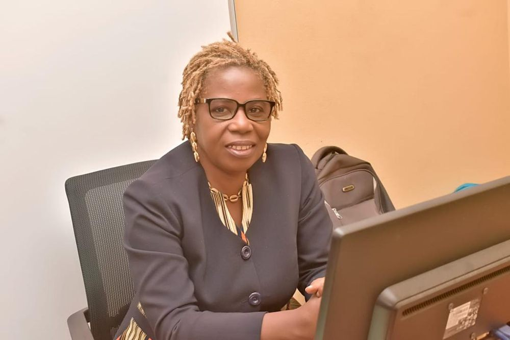
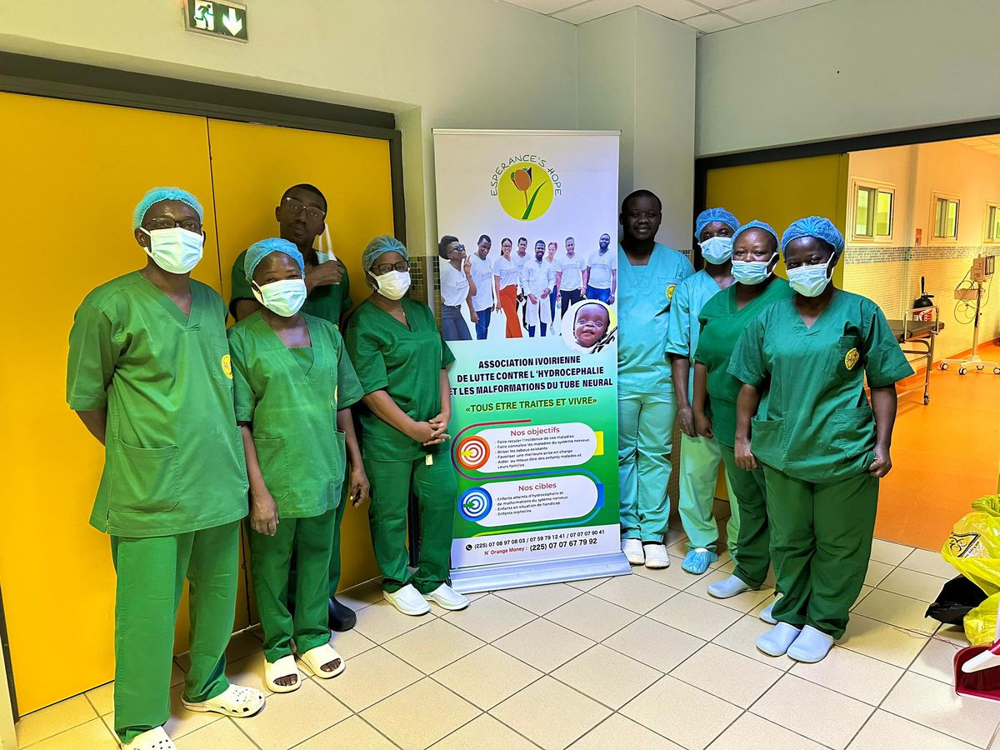
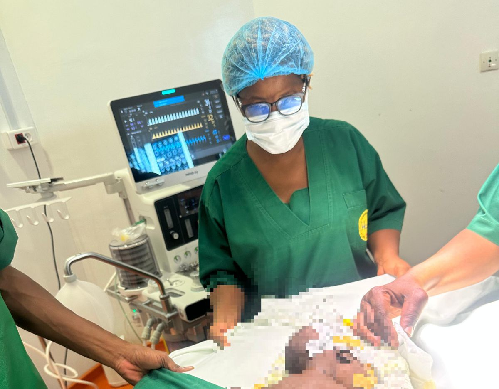
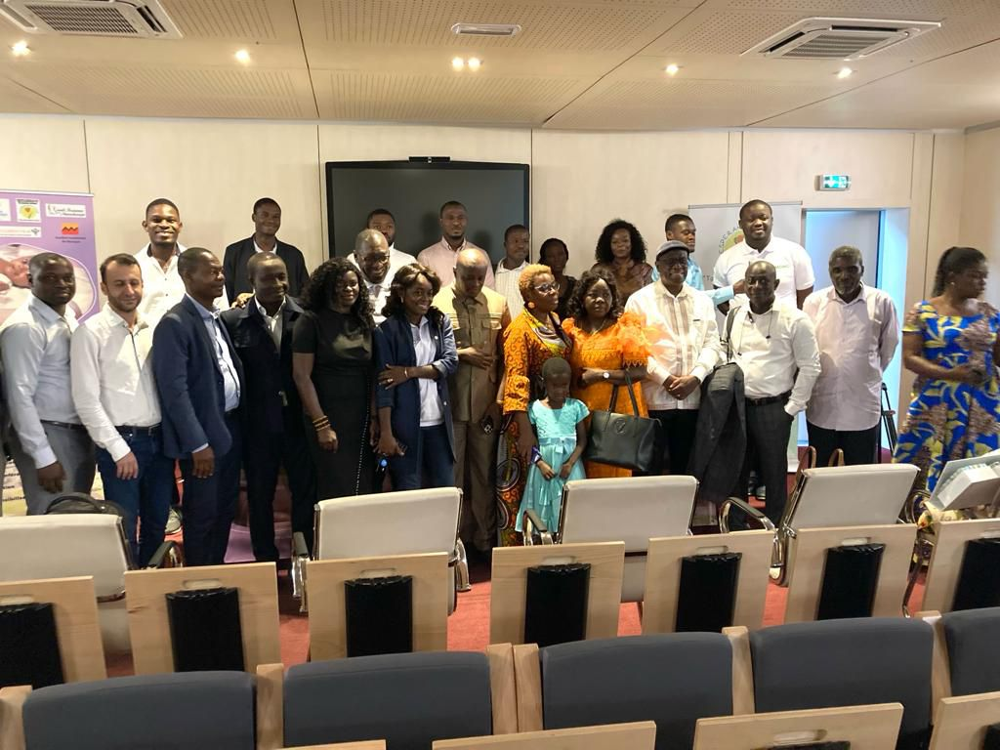
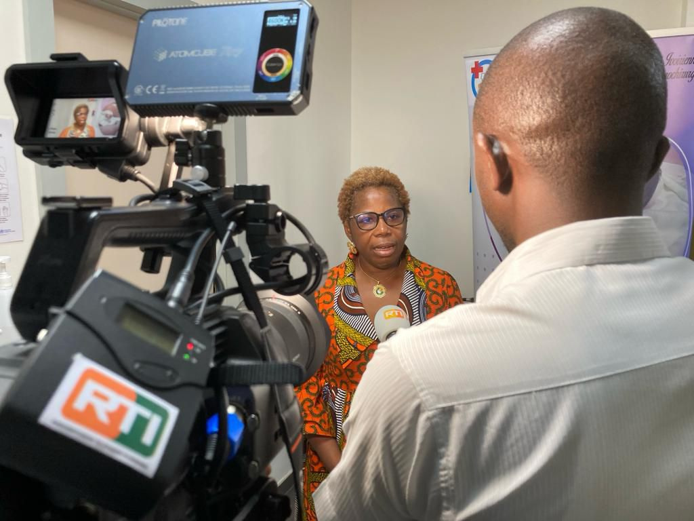

Espérance's Hope
Association ivoirienne contre l'hydrocéphalie et le spina bifida
Nous organisons des campagnes de chirurgie et de sensibilisation pour les enfants atteints d'hydrocéphalie, et nous soutenons leurs familles.
Voir nos actionsMot de la Présidente

Comprendre l'hydrocéphalie
L'hydrocéphalie est une maladie dans laquelle du liquide s'accumule dans le cerveau. Cette accumulation augmente la pression et peut provoquer chez l'enfant une tête qui grossit anormalement, des vomissements, une grande fatigue et des retards de développement.
Bien prise en charge, elle se soigne, le plus souvent par une petite opération qui permet d'évacuer le liquide en trop. Mais en Afrique, de nombreuses familles n'ont pas accès au diagnostic ni aux soins à temps.
Plus l'enfant est pris en charge tôt, meilleures sont ses chances de grandir en bonne santé.
Notre mission
Notre but : qu'aucun enfant ne reste sans soins faute d'information ou de moyens.
-
Sensibiliser
Informer les familles et les communautés pour reconnaître les signes de la maladie et lutter contre les idées fausses.
-
Faciliter l'accès aux soins
Aider les enfants à être diagnostiqués et opérés dans des structures de santé adaptées.
-
Accompagner les familles
Soutenir les parents avant, pendant et après le traitement, pour que personne ne reste seul.
Témoignages
Recueil des témoignages de parents vivant avec des enfants atteints de spina bifida et d'hydrocéphalie, réalisé en association avec la Société Ivoirienne de Neurochirurgie.
Nos actions
Quelques rendez-vous récents de l'association, avec ses partenaires.
Don à l'école « Grain de soleil »
École intégratrice de Bécédi (département de Sikensi) : remise de kits éducatifs, de vivres et de biens de première nécessité.
Campagne de sensibilisation à Bonoua
Centre Don Orione, à l'occasion de la Journée mondiale du Spina Bifida et de l'Hydrocéphalie : conférences, consultations gratuites et interventions chirurgicales pour les enfants de 0 à 5 ans, avec la Société ivoirienne de Neurochirurgie.
Journée mondiale Spina Bifida & Hydrocéphalie
Hôpital Mère-Enfant de Bingerville : interventions chirurgicales, conférences, animation et sensibilisation.
2e campagne de chirurgie de Moscati
Hôpital Moscati, Yamoussoukro (Côte d'Ivoire), avec la Fondation Porteo : cure de spina bifida et dérivations (DVP).
En images




Nous soutenir
Vous pouvez déjà nous aider en parlant de l'hydrocéphalie autour de vous et en partageant ce site. Les moyens de nous soutenir directement seront bientôt disponibles ici.